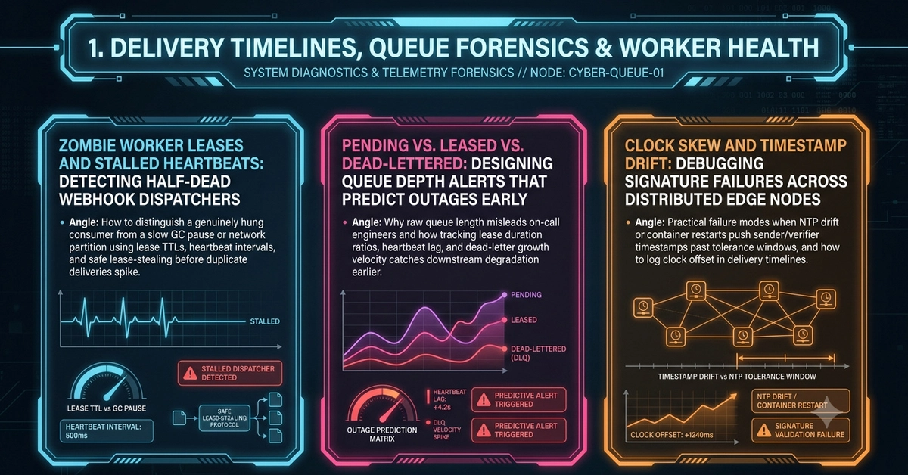
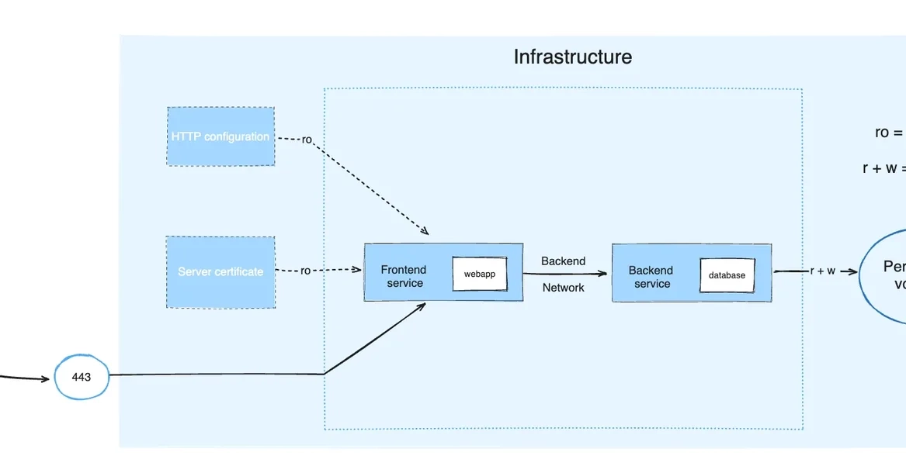
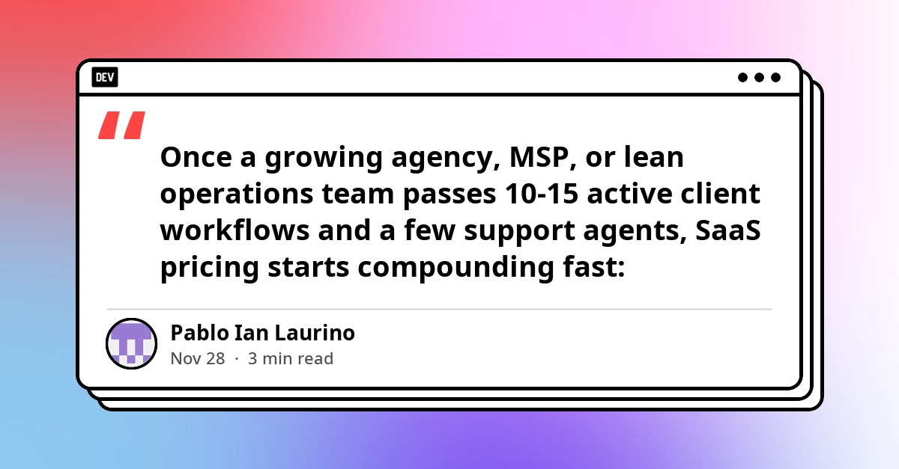
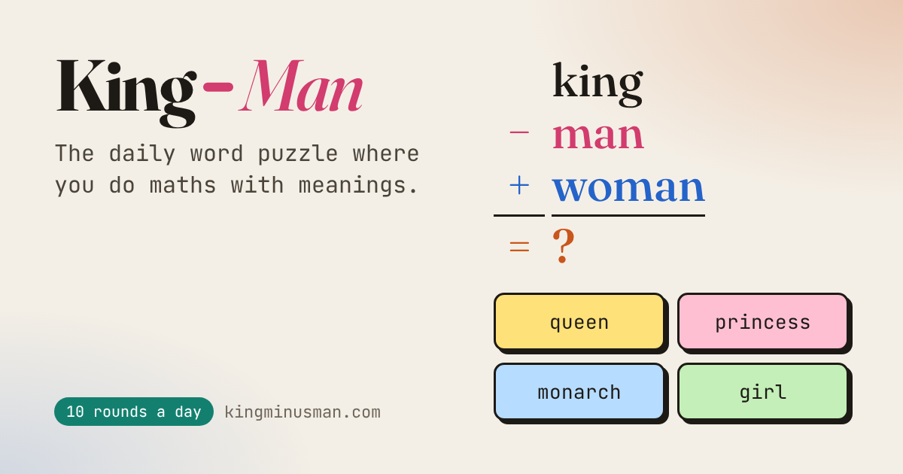

🔥 Top 3 (must read)
Convex skills send the user's app idea to a remote server without telling them
(HN discussion) A GitHub issue says Convex's agent skills send the user's app idea to a remote server without telling the user. It got 239 points and 76 comments on Hacker News, so many developers care about this. Why it matters: If your team installs skills or plugins for Claude Code or other agents, this is a reason to check what data they send out before you approve them.

Webhook Delivery Timelines, Queue Forensics, and Worker Health: A Distributed Systems Guide
Outbound webhook senders have to call endpoints you do not control. Those endpoints can hang, return random 502 errors, or reject signatures because of clock drift. The guide explains why normal service metrics often mislead you during a webhook incident, and how to debug with delivery timelines, queue checks and worker health. Why it matters: This is a practical distributed-systems topic for Node.js backends. It is also useful for on-call and SRE practice.

datasette-charts 0.4a0
Simon Willison asked Claude Opus 5.5 to build a test plugin for the new chart-type plugin hook in datasette-charts. The agent found several problems in the hook's design, and this release fixes them. Why it matters: It shows a cheap way to use a coding agent: let it act as the first user of your API before real users do.
S
🛠 Tools & releases
Ladybird enters alpha testing
: the independent web browser is now in alpha. It may become one more engine to test your web apps against.
How to Use Docker Compose: Beyond docker run
: replaces long
docker run shell scripts with one Compose file for an API, database, queue and worker. It is good to share with junior devs who struggle to start the local stack.
🤖 AI for developers
Convex skills data issue
: see Top 3. Check what data your agent skills send out.
datasette-charts 0.4a0
: see Top 3. Simon used an agent to find design problems in a plugin hook.
S
👔 Engineering & teams
Replacing $500+/mo of Zapier + Intercom with self-hosted n8n + Chatwoot + Redis
: a cost case study that cuts the bill to under $30/mo. It also covers a real problem: 4 quick chat messages in 6 seconds should not start 4 separate LLM calls. The fix is to group (debounce) the messages first.

🎯 For me
Webhook delivery and queue forensics
: matches your Node.js backend and distributed-systems interests.
Flutter Animations for Beginners
: explains Flutter's two kinds of animation, with a working example of each. It is a good link to share with newer Flutter devs on the team.
Convex skills data issue
: an EM concern. Your team needs a rule for which agent skills and plugins are allowed.
💡 App ideas & indie builds
bouncemarket
(HN): a live prediction-market game where players bet on a bouncing ball. The problem it solves is fun, not work. It shows how a very small, silly idea with a live, shared moment can get big attention (333 points).
B
DragDropMath
(HN): you learn math by dragging and dropping things to "feel" how it works. It solves the problem of math feeling abstract. This idea could inspire learning apps: move from reading rules to touching the idea.
D
Palm's last device restored, webOS on other platforms
(HN): a developer restored Palm's last device and ported its OS to other platforms. It keeps a dead platform usable. It is a good example of a project driven by a community that loves an old product.
W
King – Man + Woman = ?
(HN): a small site built on the famous word-vector math example. It turns a hidden AI idea into a toy anyone can try. You could build a similar app that explains an ML idea with one interactive input.

🎓 Try this
Use a coding agent as the first user of your own API. Do what Simon Willison did in datasette-charts 0.4a0. Pick an internal SDK, plugin hook or shared library your team owns. Ask Claude Code to build a small throwaway consumer for it, then list every point where it got stuck. Fix those points before your human teammates hit them.